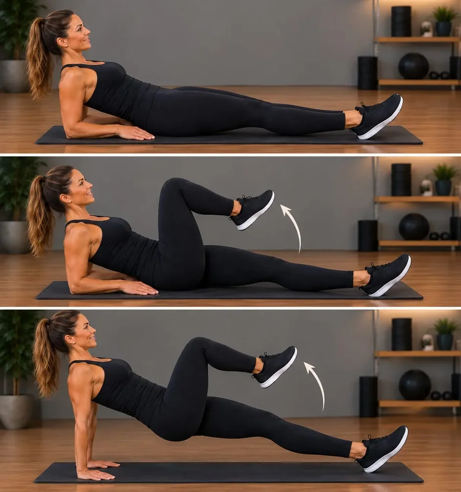
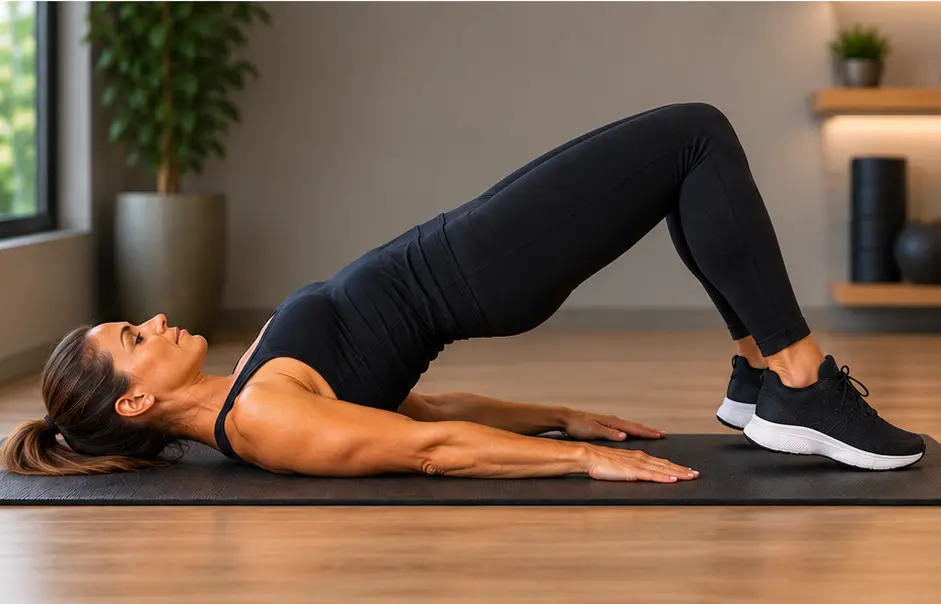
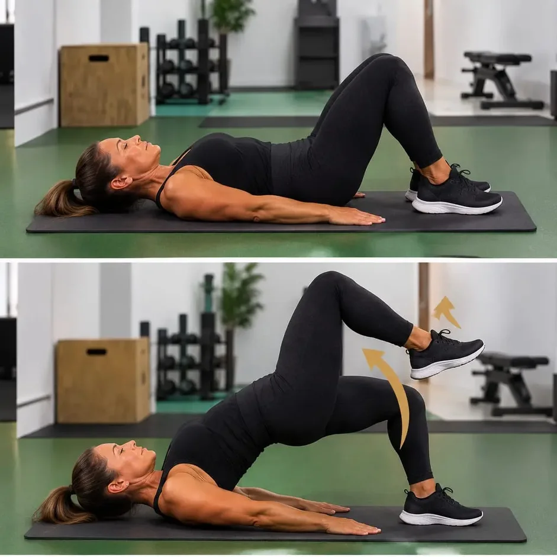
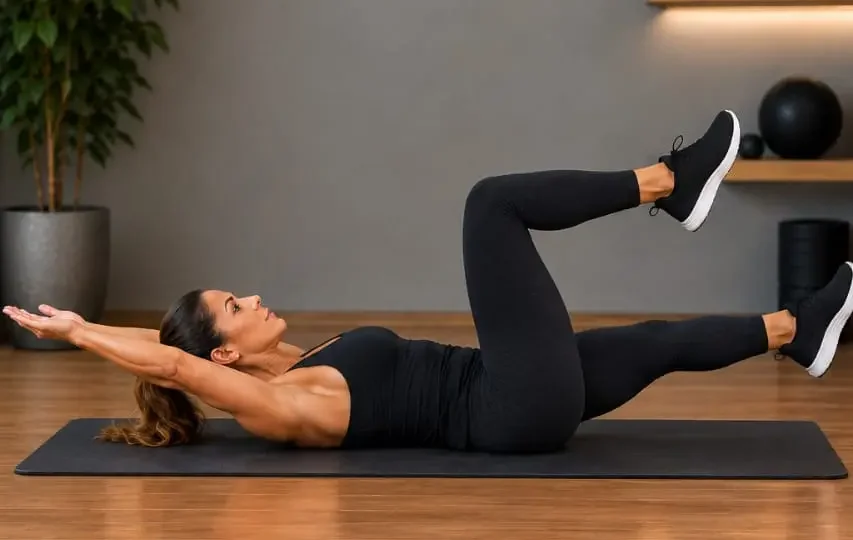
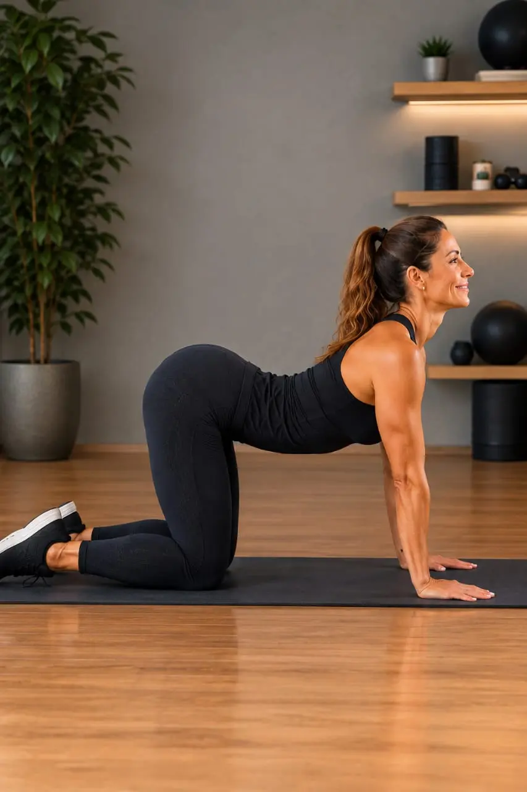
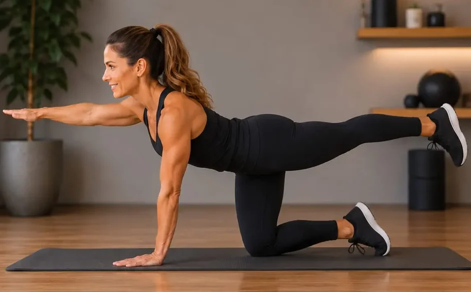
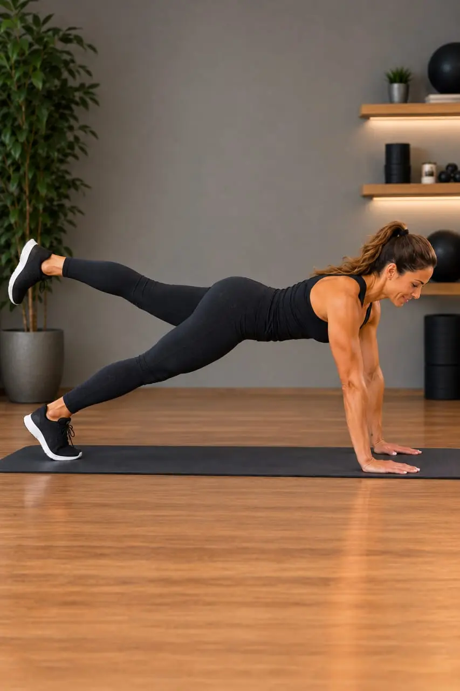

Barriga estufada depois dos 50: pode ser diástase abdominal?
Mesmo depois de emagrecer ou começar a se exercitar, algumas mulheres percebem que a região central da barriga continua mais projetada para frente. Em alguns casos, isso pode estar relacionado à diástase abdominal — uma alteração da parede abdominal que também pode ocorrer em mulheres que nunca engravidaram. Entenda os sinais, por que ela merece atenção e como fortalecer o core com segurança.
Se você já perdeu peso, melhorou a alimentação ou começou a fazer exercícios e ainda percebe uma barriga mais projetada para frente, não significa necessariamente que esteja faltando esforço.
A aparência do abdômen pode ser influenciada por vários fatores: quantidade e distribuição de gordura corporal, postura, musculatura, características dos tecidos e também pela chamada diástase dos músculos retos do abdômen.
A diástase é frequentemente associada à gravidez, mas não é exclusiva do período pós-parto. Ela também pode ser encontrada em mulheres mais velhas e pode estar relacionada a alterações na função da parede abdominal.
E existe uma diferença importante:
Uma barriga estufada não significa automaticamente que você tenha diástase.
Da mesma forma, ter diástase não significa necessariamente ter uma barriga grande ou um problema grave.
O que é diástase abdominal?
Os dois músculos retos do abdômen ficam posicionados lado a lado e são unidos no centro por uma faixa de tecido conjuntivo chamada linha alba.
Quando ocorre um aumento da distância entre esses músculos e alteração da tensão dessa estrutura, temos a chamada diástase dos retos abdominais.
Em algumas mulheres, isso pode produzir uma aparência de barriga mais projetada para frente ou um abaulamento no centro do abdômen durante determinados movimentos.
Mas a questão não é apenas estética.
A parede abdominal participa da estabilização do tronco e da transferência de força durante muitos movimentos do cotidiano. Por isso, quando a diástase está associada a perda de força, controle ou outros sintomas, o acompanhamento adequado pode ser importante.
Por que ela pode aparecer depois dos 50?
A gravidez é um dos fatores mais conhecidos para o desenvolvimento da diástase, mas não é o único.
Ao longo da vida, o corpo passa por mudanças na composição corporal, na massa muscular, nos tecidos conjuntivos e na forma como utilizamos a musculatura.
Além disso, fatores como histórico de gestações, composição corporal e características individuais podem estar associados à presença da diástase. A relação entre idade e diástase, entretanto, é mais complexa do que simplesmente dizer que “a idade causa o problema”.
Por isso, não é correto imaginar que somente mulheres que tiveram filhos podem apresentar diástase.
Diástase também aparece em mulheres na menopausa
Esse é um ponto que merece atenção especial para quem chegou aos 50+.
Um estudo brasileiro avaliou 150 mulheres peri e pós-menopáusicas e encontrou diástase acima do umbigo em 37,3% das participantes.
Entre as mulheres que apresentavam diástase, 78,6% também apresentavam algum tipo de disfunção do assoalho pélvico. O estudo encontrou uma associação entre as condições, mas, por ser um estudo transversal, não permite afirmar que a diástase seja a causa da disfunção do assoalho pélvico.
Esse dado é importante porque mostra que a saúde abdominal não deve ser analisada isoladamente.
Abdômen, postura, respiração e assoalho pélvico fazem parte de um sistema de movimento.
Como perceber possíveis sinais?
Algumas mulheres percebem:
- uma elevação ou espécie de “cordão” no meio da barriga ao fazer força;
- um abaulamento no centro do abdômen durante determinados movimentos;
- sensação de fraqueza na região central do corpo;
- dificuldade para estabilizar o tronco;
- desconforto abdominal ou lombar em algumas situações.
Esses sinais podem chamar a atenção, mas não confirmam sozinhos a existência de uma diástase.
Uma observação simples que você pode fazer em casa
Existe uma forma tradicional de auto-observação por palpação.
Deite-se de costas, com os joelhos dobrados e os pés apoiados no chão.
Coloque os dedos horizontalmente sobre a região central da barriga, na altura do umbigo. Eleve suavemente a cabeça e os ombros, apenas o suficiente para perceber a contração da musculatura abdominal.
Com os dedos, procure sentir as bordas dos músculos dos dois lados e observe o espaço entre eles.
E se eu perceber um espaço de dois dedos?
Se você observar um afastamento de aproximadamente dois dedos ou mais, é interessante procurar uma avaliação clínica.
Isso não significa automaticamente que você tenha uma diástase ou que ela seja grave.
A medida feita com os dedos é apenas uma referência inicial. O resultado pode variar conforme o tamanho dos dedos, a região examinada e a maneira como o teste é realizado.
Uma revisão sistemática encontrou confiabilidade razoável para o método dos dedos em algumas situações, mas também mostrou maior concordância entre métodos instrumentais, como paquímetro e ultrassonografia. O ultrassom é particularmente útil quando é necessário medir a distância com maior precisão.
Por isso, pense nesse teste como uma forma de perceber um possível sinal, e não como um diagnóstico.
A avaliação profissional pode confirmar se existe realmente uma diástase, verificar sua extensão e analisar possíveis causas, sintomas e condições associadas.
O objetivo da palpação em casa não é dar o diagnóstico. É ajudar você a perceber quando vale a pena investigar melhor.
Por que cuidar do core importa?
O core não existe apenas para deixar a barriga com aparência mais firme.
A musculatura do tronco participa da estabilidade da coluna e ajuda o corpo a controlar movimentos como:
- levantar-se de uma cadeira;
- carregar compras;
- pegar um objeto no chão;
- caminhar;
- subir escadas;
- praticar exercícios;
- tossir ou espirrar.
Por isso, quando falamos em fortalecer o core depois dos 50, o objetivo não deveria ser simplesmente “perder barriga”.
O objetivo é desenvolver força, controle, estabilidade e autonomia.
Exercícios podem ajudar?
Podem fazer parte de um programa de fortalecimento.
Mas é importante separar fortalecer o abdômen de prometer “fechar a diástase”.
Estudos recentes encontraram redução da distância entre os músculos em alguns programas de exercícios, especialmente em mulheres no período pós-parto. Porém, os protocolos são muito diferentes entre si e as evidências ainda não permitem afirmar que exista um exercício ou sequência universal capaz de corrigir anatomicamente a diástase.
Uma revisão sistemática e meta-análise publicada em 2026 chegou a uma conclusão ainda mais cautelosa: não encontrou evidência suficiente para considerar os exercícios isoladamente um tratamento capaz de reduzir consistentemente a distância entre os músculos em mulheres pós-parto, embora isso não exclua possíveis benefícios funcionais ou sintomáticos.
Em outras palavras: exercício continua sendo importante — mas não precisamos vender promessa milagrosa.
Uma sequência para fortalecer o core
Os quatro movimentos abaixo não devem ser entendidos como tratamento individual para diástase. São exemplos de movimentos que trabalham diferentes componentes da força e da estabilidade do tronco.
A execução deve ser adaptada à capacidade de cada mulher.
Como respirar em todos os exercícios: solte o ar pela boca durante o esforço e inspire pelo nariz ao voltar à posição inicial. Nunca prenda a respiração. Se a barriga formar uma “crista” ou ficar abaulada no meio durante o movimento, diminua o esforço ou pare.
1. Apoio reverso
Sentada, coloque as mãos atrás do corpo e apoie os pés no chão. Solte o ar pela boca e eleve o quadril de maneira controlada, procurando manter o tronco estável. Inspire pelo nariz ao descer.
Esse movimento exige participação dos glúteos, dos músculos do tronco e dos braços.
Comece com uma elevação pequena.
Se sentir dor nos ombros, punhos ou lombar, interrompa e procure orientação profissional.
Versão para começar: elevação de joelho reclinada. Se ainda é difícil manter o quadril elevado, comece por esta versão, com o quadril apoiado perto do chão, enquanto fortalece o core. A imagem mostra a evolução em três momentos. Comece apoiada nos antebraços, com as pernas estendidas. Solte o ar pela boca e eleve um joelho em direção ao peito, inspirando pelo nariz ao voltar. Quando estiver segura, apoie-se nas mãos, com o tronco mais alto, e repita o movimento. Quando esse movimento estiver confortável, avance para o apoio reverso com o quadril elevado.

2. Elevação pélvica

Deite-se de costas, dobre os joelhos e mantenha os pés apoiados no chão.
Solte o ar e eleve o quadril lentamente; inspire ao retornar à posição inicial.
Não é necessário subir o quadril o máximo possível.
O mais importante é controlar o movimento e evitar compensações.
Evolução: ponte com elevação de perna. Quando a elevação pélvica estiver confortável e você conseguir manter o quadril estável do começo ao fim do movimento, experimente esta versão. Deitada de costas, com os joelhos dobrados e os pés no chão, solte o ar e eleve o quadril. Com o quadril elevado, levante um pé do chão, mantendo o joelho dobrado, como se desse um passo no ar. Apoie o pé de volta, inspire ao descer o quadril e troque de lado na repetição seguinte.

O desafio é manter o quadril nivelado enquanto o pé sai do chão, sem deixar um lado cair. Se o quadril balançar, a lombar arquear ou aparecer um abaulamento no centro da barriga, volte para a elevação pélvica simples.
3. Movimento alternado de braços e pernas

Deitada de costas, mantenha o tronco estável enquanto movimenta braços e pernas de maneira alternada. Na imagem, os braços ficam estendidos acima da cabeça, uma perna fica dobrada no ar e a outra, estendida perto do chão. Solte o ar ao alternar a posição das pernas e inspire ao voltar.
Esse tipo de exercício exige controle da região abdominal enquanto os membros se movimentam.
Comece com uma amplitude pequena.
Se perceber que a lombar perde o controle ou que aparece um abaulamento importante no centro do abdômen, reduza o movimento ou interrompa.
4. Quatro apoios com extensão alternada

Fique em quatro apoios, com as mãos na linha dos ombros e os joelhos abaixo do quadril.

Solte o ar pela boca e estenda lentamente um braço e a perna oposta — por exemplo, o braço direito e a perna esquerda —, procurando manter o tronco estável. Inspire pelo nariz ao retornar à posição inicial e troque o lado.
O objetivo não é levantar braço e perna o mais alto possível.
O desafio está em manter o corpo controlado enquanto os membros se movimentam.
Atenção: em caso de desconforto cervical, alinhe o pescoço com o braço estendido, mantendo a cabeça na linha do tronco, para tirar a pressão da coluna.
Evolução avançada: prancha com elevação de perna. Esta é a versão mais exigente da sequência. Só experimente quando o quatro apoios com extensão alternada estiver fácil e controlado, sem abaulamento no meio da barriga. Apoie as mãos no chão, na linha dos ombros, e estenda as pernas para trás, apoiada nas pontas dos pés, com o corpo formando uma linha do quadril aos ombros. Solte o ar pela boca e eleve uma perna estendida, sem deixar o quadril girar ou subir. Inspire pelo nariz ao apoiar o pé e troque de lado.

Se a lombar afundar, a barriga ficar abaulada no centro ou aparecer dor nos punhos, ombros ou lombar, volte para o quatro apoios.
Quanto fazer?
Não existe uma quantidade única que sirva para todas as mulheres.
Para quem está começando, uma possibilidade é trabalhar com 1 ou 2 séries de 6 a 8 repetições, executadas lentamente e com boa qualidade.
Se o movimento estiver confortável e bem controlado, a progressão pode ser gradual.
Qualidade vem antes de quantidade.
Respire durante o exercício
Um erro comum durante exercícios de força é prender a respiração.
Em vez disso, procure manter uma respiração contínua e coordenada com o movimento: solte o ar pela boca durante o esforço (ao subir o quadril, ao elevar o joelho ou ao estender braço e perna) e inspire pelo nariz ao voltar à posição inicial.
Aprender a coordenar respiração e movimento faz parte do treinamento do controle do tronco.
E os abdominais tradicionais?
Não precisamos tratar um exercício específico como “proibido” para todas as mulheres.
A resposta depende da pessoa, do estágio de treinamento, da técnica e da presença ou não de sintomas.
O mais importante é observar como o corpo responde ao movimento.
Se determinado exercício provocar dor, sensação de pressão, perda de controle do tronco ou abaulamento importante, ele pode precisar ser adaptado ou temporariamente substituído.
O exercício certo é aquele que você consegue executar com controle e segurança para o seu nível atual.
Quando procurar um fisioterapeuta?
É especialmente importante buscar avaliação profissional se houver:
- dor abdominal ou lombar persistente;
- abaulamento importante na região abdominal;
- suspeita de hérnia;
- sensação de pressão ou peso na região pélvica;
- perda urinária durante exercícios;
- dificuldade para realizar movimentos cotidianos;
- sensação de fraqueza importante no tronco;
- dúvida sobre a presença ou extensão da diástase.
Um fisioterapeuta com experiência em saúde da mulher, core e assoalho pélvico poderá avaliar a parede abdominal de maneira mais completa e indicar os exercícios mais adequados para cada caso.
Depois dos 50, fortalecer é ganhar autonomia
A barriga não precisa ser tratada como uma inimiga.
O corpo muda com o tempo — e isso não significa que ele deixou de responder ao movimento.
Fortalecer o core depois dos 50 não deveria significar perseguir o corpo de 20 anos.
Significa ter mais segurança para levantar, caminhar, carregar, brincar, viajar, praticar atividades físicas e realizar as tarefas do dia a dia.
A proposta do A Boa Idade é essa:
Menos cobrança pela aparência, mais força para viver.
Importante: este conteúdo é educativo e não substitui avaliação, diagnóstico ou acompanhamento individualizado. A percepção de um espaço entre os músculos durante a palpação não confirma, sozinha, a presença ou a gravidade de uma diástase. Se houver dor, suspeita de hérnia, sintomas no assoalho pélvico, abaulamento importante ou dúvida sobre a execução dos exercícios, procure um profissional de saúde.
Fontes e leituras científicas
- Harada et al. — Diastasis recti abdominis and pelvic floor dysfunction in peri- and postmenopausal women. Estudo transversal brasileiro com 150 mulheres peri e pós-menopáusicas.
- van de Water & Benjamin — Measurement methods to assess diastasis of the rectus abdominis muscle. Revisão sistemática sobre métodos de avaliação, incluindo palpação, paquímetro e ultrassom.
- Beamish et al. — Impact of postpartum exercise on pelvic floor disorders and diastasis recti abdominis. Revisão sistemática e meta-análise publicada no British Journal of Sports Medicine.
- Abdullah et al. — Comparative efficacy of abdominal exercises and abdominal binding on diastasis recti abdominis reduction. Meta-análise de ensaios clínicos randomizados publicada em 2025.
- 2026 — What is the evidence for abdominal and pelvic floor muscle training to treat diastasis recti abdominis postpartum? Revisão sistemática e meta-análise atualizada.